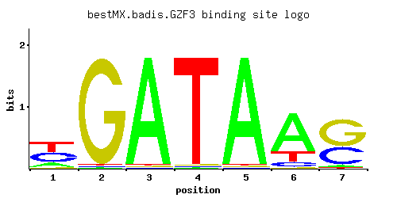

GZF3
YJL110C, NIL2, DEH1
GATA zinc finger protein and Dal80p homolog that negatively regulates nitrogen catabolic gene expression by competing with Gat1p for GATA site binding; function requires a repressive carbon source; dimerizes with Dal80p and binds to Tor1p
Best-performing DNA-binding model.

View and copy the recommended matrices ↘
A | 0.18 0.01 0.97 0.01 0.97 0.72 0.04 C | 0.39 0.01 0.01 0.01 0.01 0.09 0.37 G | 0.02 0.97 0.01 0.01 0.01 0.01 0.58 T | 0.41 0.01 0.01 0.97 0.01 0.18 0.01
A | 18 1 97 1 97 72 4 C | 39 1 1 1 1 9 37 G | 2 97 1 1 1 1 57 T | 41 1 1 97 1 18 1
A | -0.58 -3.47 1.11 -3.47 1.11 0.81 -2.08 C | 0.77 -2.89 -2.89 -2.89 -2.89 -0.69 0.72 G | -2.20 1.68 -2.89 -2.89 -2.89 -2.89 1.17 T | 0.25 -3.47 -3.47 1.11 -3.47 -0.58 -3.47
Alternative candidate matrices 9
Historical matrix candidates from the original ScerTF database. Expand a source to inspect its original logo, scores, and matrix values.
GZF3_AFoat et. al.P = 1View matrix ↘
GZF3_BFoat et. al.P = 7.59e-05View matrix ↘
GZF3_CFoat et. al.P = 0.04276View matrix ↘
GZF3Harbison et. al.P = 0.6609View matrix ↘
GZF3Macisaac et. alP = 0.6609View matrix ↘
GZF3Morozov et. al.P = 0.3033View matrix ↘
GZF3Pachkov et alP = 0.3923View matrix ↘
GZF3Zhu et. al.P = 0.1273View matrix ↘
GZF3Zhao and StormoP = 0.006861View matrix ↘
Gene-level annotations and interactions.
Genes bound in ChIP-chip experiments 63 genes
YBR232C, YCL074W, YCR082W, YCR091W, YCR105W, YDL077C, YDR080W, YDR117C, YDR118W, YDR210W-D, YDR282C, YDR355C, YDR494W, YEL031W, YER002W, YER047C, YFR026C, YGL001C, YGL156W, YGL171W, YGR089W, YGR218W, YHL048W, YHR074W, YHR118C, YHR119W, YHR120W, YJL203W, YJL204C, YJR125C, YKL136W, YKL143W, YKL144C, YKL204W, YKR022C, YKR023W, YKR105C, YKR106W, YLL047W, YLL048C, YLR083C, YLR127C, YLR128W, YLR265C, YLR339C, YLR341W, YLR456W, YMR268C, YMR269W, YMR287C, YMR288W, YNR068C, YOL160W, YOR021C, YOR090C, YOR091W, YPL180W, YPL182C, YPL215W, YPR081C, YPR092W, YPR121W, YPR197C
Genes affected by TF deletion 45 genes
YHL016C, YKR039W, YOR065W, YFR033C, YPL016W, YPR138C, YIR032C, YML027W, YML089C, YOR129C, YBR093C, YNL142W, YDR281C, YMR253C, YMR023C, YLR099C, YOR074C, YNL183C, YOL144W, YER038C, YHR215W, YFL021W, YOL143C, YAR071W, YCL025C, YFL001W, YLR420W, YNL223W, YNL289W, YGL249W, YHR128W, YEL002C, YOL126C, YDR481C, YBL042C, YKL216W, YGL228W, YMR002W, YNL105W, YHR136C, YGL255W, YJL110C, YDR524C, YNL141W, YOL101C
Predicted TF–TF partners 1 genes
DAL80